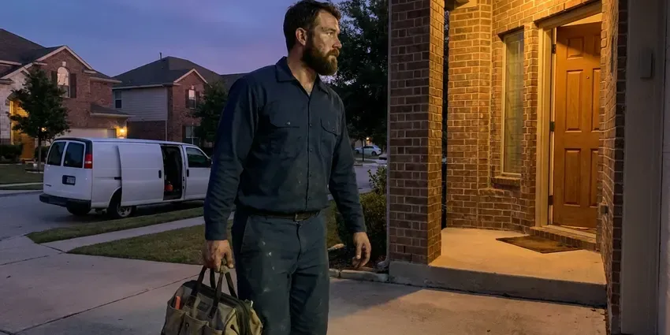

Gas Line Repair in Woodbury, MN
Got a red tag from the utility in Woodbury, MN? We repair the line, get it holding pressure and help get the meter unlocked.
- Certified Technicians
- Written Prices Up Front
- Pressure Tested to Code
- Local Woodbury Plumbers

Stop Gas Leaks Quickly in Woodbury, MN
We test the repair at code pressure before we pack up.
Gas Line Repair for Homes and Rentals in Woodbury, MN
CNV Plumbing repairs gas piping in homes and businesses across Woodbury, MN, from a weeping union behind the water heater to a corroded steel line under the lawn. Every job ends with a test. We cap the open ends, pressurize the system and watch a gauge for the time the local code requires, and it has to hold with no drop before we call the work done. That test is what the inspector and the utility look for.
Work we handle every week:
- CSST repair, bonding checks and connector upgrades
- Leak detection on risers, yard lines and interior piping
- Natural gas and propane line replacement

Additional Plumbing Maintenance Services in Woodbury, MN
Our maintenance and specialty plumbing services in Woodbury, MN protect your home year-round and extend the life of every system.


Customers
Why Choose CNV Plumbing for Gas Line Repair in Woodbury, MN?
We explain what failed, why it failed and what it will take to fix it. Some fixes take an hour. A buried steel line with three leaks is a bigger job, and you will see both the spot-repair price and the full replacement price so you can choose with real numbers.
- Leak Pinpointing, Electronic detectors and soap solution narrow the leak to one joint, which keeps the repair small.
- Utility Ready, We schedule inspections and call the utility so service comes back sooner.
- Licensed Gas Plumbers, Our plumbers are licensed and trained on gas systems and work on it every week.
Citywide Coverage
Gas line service reaches all of Woodbury, MN and the surrounding towns. Response is usually same day. Homes on natural gas and homes on propane tanks both get the same service, and we handle the regulators, yard lines and appliance hookups on either system.
Experienced Team
The gas specialists at CNV Plumbing bring hands-on experience to every job. They have seen most failures. Corroded black iron threads, damaged CSST and pinholed yard lines are all routine, and they know the repair that lasts for each.
Safety-First Approach
Gas work starts with safety and ends with a test. We follow the fuel gas code. We shut off and purge as needed before work, then pressure test after and check that each appliance lights and burns correctly.
Trusted Certified Woodbury Plumbing Services Professionals
At CNV Plumbing, we are proud to offer certified plumbing services throughout Woodbury, MN. Those papers on the wall mean something. Every repair, install and maintenance visit follows strict safety and quality rules, and the plumbers doing the work carry recognized industry credentials.
Call Us Now PHCC Plumbing Contractor Recognition
PHCC Plumbing Contractor Recognition Better Business Bureau (BBB) Accreditation
Better Business Bureau (BBB) Accreditation Angi Certified Pro
Angi Certified Pro ISO 9001 Quality Management Certification
ISO 9001 Quality Management CertificationWhat Our Gas Line Plumbers Fix in Woodbury, MN
Gas Permits and Inspections in Woodbury
Repairs that change piping, and all new gas lines, usually need a permit and inspection from Woodbury building officials. We file the permit, schedule the inspection and are on site when the inspector checks the work and the test gauge. Inspection usually happens within a few days. After it passes, the gas company can restore service, and we can return to relight the pilots.

Honest Gas Line Repair Pricing in Woodbury, MN
Gas leaks are usually a surprise expense, so the price should not be another surprise. We give you a written estimate that lists the repair, the materials and any permit or inspection fees before we start. No hidden fees. If spot repair and replacement are both options, we price each so you can weigh cost now against the age of what is left in the ground.
Pool Heater, Fire Pit and Grill Lines in Woodbury, MN
Backyard gas lines for pool heaters, fire pits and built-in grills face sun, weather and irrigation water that shorten their life. Pool heaters are the big load, often 250,000 to 400,000 BTU, so a line that was fine for a grill can starve the heater and the house appliances at the same time. We size outdoor lines for the full load. New and repaired lines get tested, buried to the required depth and laid with tracer wire.
Gas Appliance Connector Repair in Woodbury, MN
Weak flames or a smell near one appliance often point to the connector or shutoff behind it. Older uncoated brass connectors can crack at the flare nut, and they are no longer accepted by most codes or utilities. New coated connectors go in. We also add a reachable shutoff and a drip leg where needed, and confirm the new connector is rated for that appliance's BTU input.
Gas Line Extensions and Relocations in Woodbury
Adding a gas fireplace, moving a laundry room or switching a range from electric to gas usually means extending the gas line. Sizing comes first. Our plumbers total the BTU load, measure the run and size the pipe so the last appliance on the line still gets full pressure at peak use. Then we route it, tie it in and test it.
Emergency Gas Line Repair in Woodbury
If you smell gas, leave the building, skip the light switches and call your gas utility or 911 from outside. Then call us. After the gas company secures the meter, our plumber finds the leak, repairs it and runs the test the utility needs to see before turning gas back on. Pilots get relit once gas is back. Most emergency repairs are done in a single visit with parts from the truck.
Gas Leak Repair at Fittings and Valves in Woodbury
Most residential gas leaks are at a threaded joint, a valve stem or a flexible connector, not in the middle of a pipe. That keeps repairs small. We back out the leaking joint, clean the threads, apply gas-rated thread sealant and reassemble it, or replace the fitting or valve if the threads are damaged. We soap-test the repaired joint and pressure test the system before leaving.

Corroded Gas Pipe Replacement in Woodbury
Buried steel gas line corrodes once its coating cracks, and moisture, roots and ground movement speed it up. Freeze and thaw movement can crack older sewer laterals, and tree roots often find their way into the joints. Rusted buried steel gets replaced with polyethylene and tracer wire, and we use a listed transition riser where it rises to the house. Above-ground runs stay in steel. Everything is tested before the trench is backfilled, so a bad joint gets caught while it is still easy to reach.
Licensed Gas Line Plumbers Near Woodbury, MN
Searching for a gas plumber nearby makes sense, since local crews know the utility, the inspectors and the permit office. We pull permits for gas work in Woodbury regularly, so we know exactly what the inspector checks on the gauge and the paperwork. Inspections go faster that way.
Searching 'gas line repair near me' in Woodbury, MN usually means you smelled something or the utility locked your meter. CNV Plumbing has gas plumbers nearby. Same-day visits are common, and the truck shows up stocked with detection gear, pipe, fittings and a test gauge. That saves a second trip.
CNV Plumbing at a Glance
- Fully licensed plumbing team covering Woodbury, MN
- Same-day appointments and 24/7 emergency response
- Clear written estimates, no hidden fees
- 4.8-star rated by 501+ Minnesota customers
Woodbury Map
Woodbury Information
- Population
- 79,538
- Area codes
- 612/507/320
- Service area
- Woodbury and communities within 40 miles
- Nearby
- St. Paul, Eagan, Minneapolis, Apple Valley
Most gas leaks in Woodbury, MN start at a fitting, a connector or a rusted spot on old steel pipe, and most are found with a meter test and a detector. Extremely cold, long winters are the biggest stress on plumbing in Minnesota, and incoming water stays cold for much of the year.
Talk to a Plumber
Call CNV Plumbing for honest, reliable plumbing from people who know the trade in Woodbury, MN.
Our Specialized Plumbing Services in Woodbury, MN
At CNV Plumbing, you get every kind of plumbing service from one company across Woodbury, MN. From leak detection to full system installs, our team works fast and charges fair prices on homes and commercial properties alike. Explore our core services below:


How Gas Line Repair Works in Woodbury, MN
Gas line repair with us is tested, permitted and done carefully from start to finish.
Get Safe, Then Call
Call (612) 712-9569 once you are outside and have called your gas utility if you smell gas. We send a licensed plumber as soon as we can.
Locate and Repair
We test the system to find the leak and go over your choices. After you approve, we replace the damaged pipe or fittings to code.
Test and Restore
We pressure test the repair and arrange the inspection where required. Then we help restore service and relight appliances.
Frequently Asked Questions About Gas Line Repair in Woodbury
A small fitting repair in Woodbury can be around $250. Big jobs cost more. Trenching a long yard line or cutting through concrete can push the price to $5,000 or more, depending on length and access. You get the number in writing first.
There is no required yearly inspection for most homes. A look every few years helps older houses. Old brass connectors, decades-old buried steel and appliances with yellow or weak flames are all good reasons to have the system checked.
Our plumbers work with black iron, coated steel, copper where local code allows it, and CSST in homes across Minnesota. Each needs the right fittings. Using the correct sealant, the manufacturer's own CSST fittings and the proper supports is what keeps a repair from leaking again a year later.
Most standard repairs, like fixing a small leak or replacing a short section, are done in a few hours. Bigger jobs take longer. Long pipe replacements or relocations can take a full day or two visits, and we give you a realistic timeline after the first inspection so you can plan around having the gas off.
Most gas piping changes and all new gas lines in Woodbury, MN need a permit. Like-for-like connector replacements often skip it. With a permit, an inspector reviews sizing, materials and the test result, and our office files it and handles the visit for you.
Watch for a sulfur or rotten egg smell, a hiss near a pipe or appliance, visible damage to gas piping or dying plants near an outdoor line. Get outside right away. Once you are out, call the utility and then call us, since they need to secure the meter before the repair can start.
Every gas line repair we make includes a written warranty on parts and labor. Each one is pressure tested before we leave.
Look for dead or yellow grass in a line across the yard, bubbling in wet soil, a hissing sound or a rising gas bill. Each can signal a leak underground.
What Our Customers Say About Our Plumbing Experts

Laura S.
Our 40 gallon tank started leaking from the bottom after thirteen years. The tech hauled the old one out, set a new unit with a fresh expansion tank, and had hot water running in about four hours. He took the old tank with him too.
Water Heater Replacement · Apple Valley, MN
Paul B.
Our pit pump ran nonstop even in dry weather. The plumber found the check valve was stuck open, so the same water kept cycling back into the pit. New valve, new float switch, done in an hour. It runs quiet now.
Sump Pump · St. Paul, MN
James P.
Our restaurant had a slow leak at the hand sink that was rotting the cabinet base. CNV Plumbing came in at six in the morning before prep, replaced the trap and both supply lines, and was packed up before my first cook clocked in.
Commercial Plumbing · Burnsville, MN
Lisa C.
Water was pouring out from under the washing machine on a holiday weekend. CNV Plumbing talked me through closing the valves over the phone and had a plumber at the house within ninety minutes. It was a burst fill hose.
Emergency Plumbing · Burnsville, MNJessica T.
We were adding a gas range in a kitchen remodel and needed a new line run from the meter. The plumber pulled the permit, ran the pipe through the crawl space, and had it inspected and approved within the week.
Gas Line Repair · Minneapolis, MNMonica A.
Our water bill nearly doubled in one month with no change in how we used water. The tech checked the meter, heard the leak under the hallway with his equipment, and opened a hole about a foot square. Fixed the same day.
Slab Leak Repair · Bloomington, MN